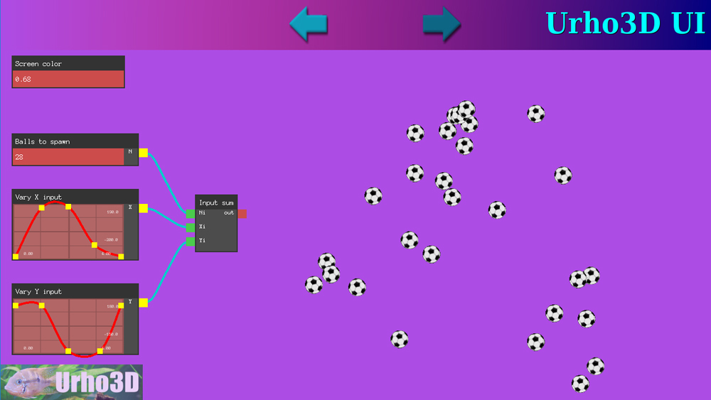

slapin
Implemented very primitive node editor for BehaviorTree,
very silly, but very usable. Only thing external to Urho is arrow sprite.

Implemented very primitive node editor for BehaviorTree,
very silly, but very usable. Only thing external to Urho is arrow sprite.

I’ll hooray any graph based workflow. This is really cool! I like that it’s also urho native.

Nice, though I’m not sure how you missed Lumak’s UI Components…

https://github.com/Lumak/Urho3D-UI-Components
It’s only in cpp and maybe you’re looking for something else?
I only want to do this with native widgets and in AngelScript. Lumak’s widgets are C+±only. I want all tools to be done quickly. The tool contains not only this editor but some other ad-hoc tools like character viewer, metadata editor,
and some other tools are planned so I don’t want to spend time with fancy GUI, I need things simple and functional,
as these are for me, not for somebody else.
Made update video. Well… Enjoy my English. I never recorded myself before, did not notice
it was that bad. Need to make more stuff on youtube to improve…

(No, I don’t feel ashamed, not a tiny bit. And no, I don’t really care…)